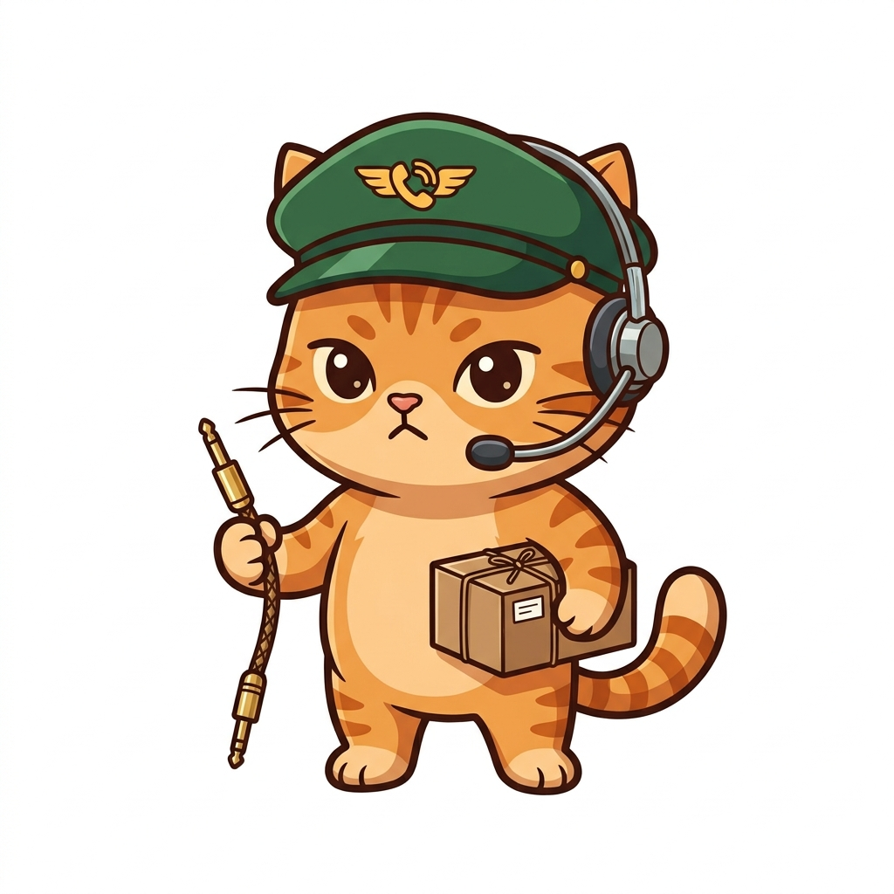

✨ 体験ミッション / 情報I 第5章 ネットワーク
黒電話ねこ vs 小包ねこ
〜回線交換・パケット交換・小規模LANの仁義なき通信実験〜
📞 【旧式】回線交換方式
長電話マダム猫
「無言でお茶を飲む時間も回線はわたくしの独占ざます！」
VS
📦 【現代】パケット交換＆LAN

小包通信ねこ（あなた）
「適度な小包に分けてLANからWANへ届けるニャ！」
📌 きょうの体験メニュー（全5ステップ・直感ラボ）
ねこ村の通信網がいま大パンク中！成金マダム猫が「黒電話（回線交換）」で村に1本しかない通信ケーブルを独占しているため、消防や宅配の連絡がまったく届かないニャ。
あなたの手でスイッチ盤・分割機・ルータ分岐器・LAN配線盤を操作し、「なぜその仕組みが必要なのか」を失敗と成功を通して体感するニャ！
- STEP 1（回線交換）：マダム猫の「無言の紅茶タイム（0バイト）」でも回線が塞がる非効率と強制切断レバー
- STEP 2（パケット分割）：「切らない」「20分割みじん切り」「4分割」の通信量メーター比較とヘッダ🏷 ヘッダ（荷札）パケットの先頭に付く宛先・通し番号ニャ！荷札貼り
- STEP 3（経路制御と追い越し）：手動ルータ切替！渋滞による「追い越し（着順前後）」と落雷による2番欠損・う回を体験
- STEP 4（TCP vs UDP）：通し番号の「歯抜け検知（ACK・再送要求）」＆番号順復元のTCPと、即再生UDPの比較
- STEP 5（小規模LAN分岐配線）：ハブから有線・無線に分岐する配線パズルと、「LAN内印刷・WAN通信・屋外断線時」の3大実験